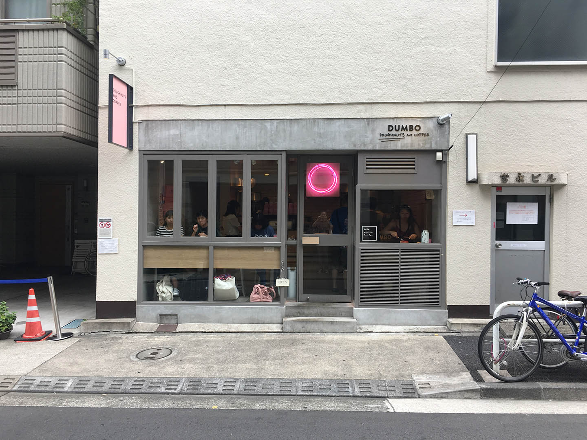
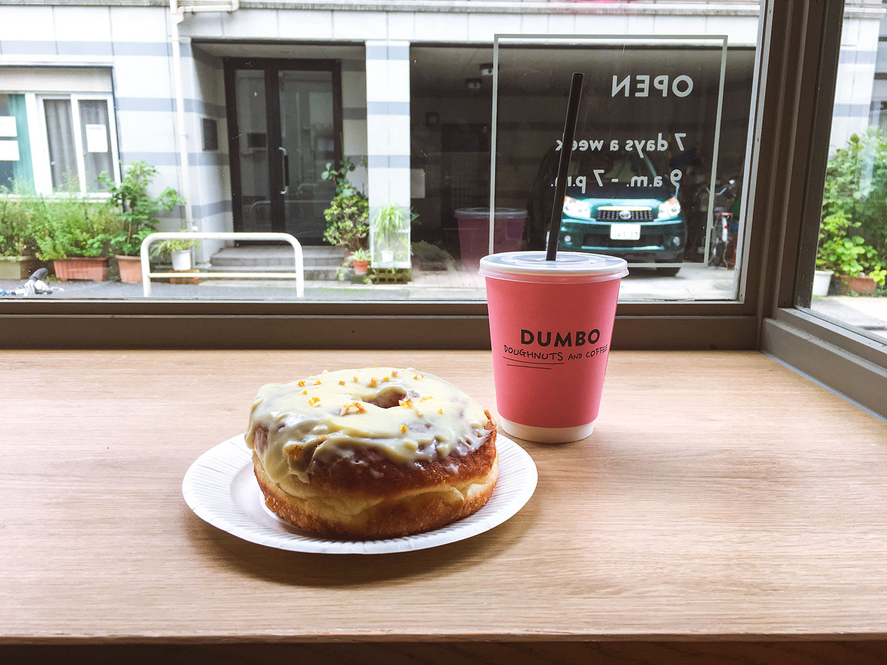
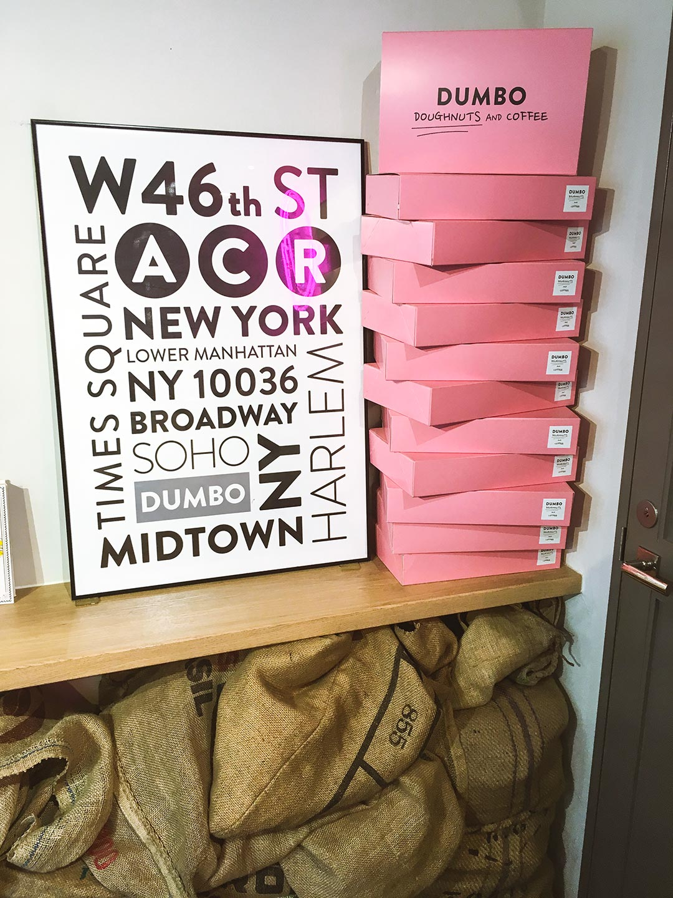
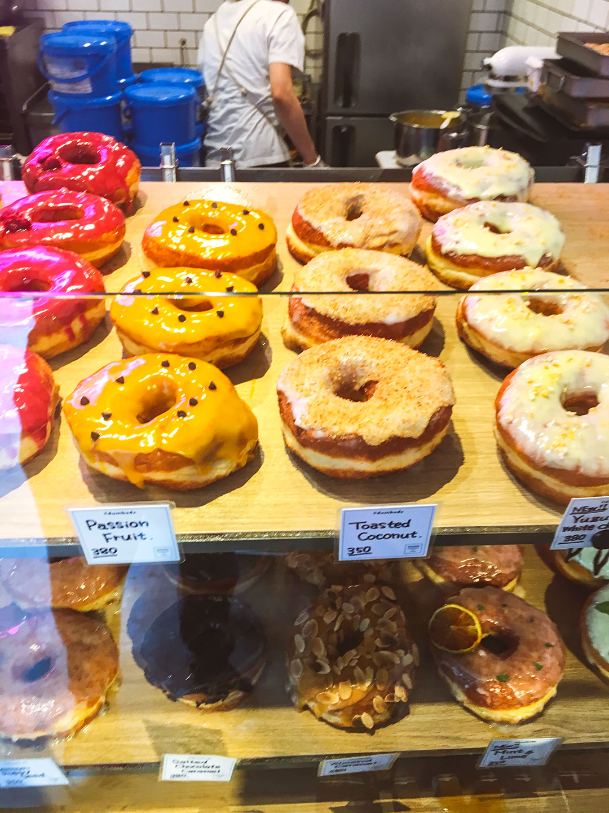

carefully curated opinions about the best (and worst) bars, restaurants, hotels, recipes, art and design across the world
Review
Tokyo: Hipster NYC comes to Tokyo at Dumbo Donuts in Azabujuban

...Yeah, I hate myself for writing that headline too... but, you clicked on it. Right?
(also, tell me you don't read "Azabujuban" as "Azerbaijan"...)
One of the great things about being a trend-forecasting food and drink branding consultant is I'm constantly in search of the newest places the kids like to go (Editor's note: I'm really on a roll today with sentences that make me sound like a tool)
I'm especially in-tuned to the donut market... which I know a thing or two about.
Dumbo Doughnuts
2 Chome−17−6
Azabujuban
Minato-ku, Tokyo
www.dumbodc.com
Ostensibly a "NYC inspired" doughnut shop, named after the neighborhood of DUMBO (Down Under the Manhattan Bridge Overpass... you'd be surprised how many "New Yorkers" these days have no idea where that came from). The first "tell" it's not a NYC donut shop is they spell it the "ugh" (doughnut) way. Yes you read that right and yes it's intentional... the ugh way.
Beyond that... everything is pretty spot on. The doughnuts are yeast doughnuts and fried. Large, in the same vein as Peter Pan Donuts in Greenpoint. My suspicion is the proprietors based their donuts on Peter Pan but "Greenpoint Doughnuts" didn't have the same "pinache" as "DUMBO" (especially considering the Japanese love of everything Disney). Again, have to give them credit from a branding perspective.
All of the donuts are glazed and have toppings. No jelly donut, no chocolate (at least when I visited). The toppings range from traditional (glazed, cinnamon sugar) to the "exotic" (Passionfruit, Matcha Cream Cheese,Yuzu White Chocolate, Mint and Lime)
I got the Yuzu White Chocolate...a nd true to Japanse for, it was exactly what I thought it was gonna be. I thought it a little sweet, but the 23 year old girls next to me who took at least triple the amount of photos I did probably didnt think so.
The iced coffee I got was great. Way better than the coffee I'd get in NYC at Peter Pan, or Dough or Dun-Well.\
Overall: Would I go back? Me as a late 30's man who doesnt eat many sweets (I said "eat")... no, I wouldnt. But if I were in the neighborhood and wanted coffee,I'd stop in or if I remotely craved a doughnut, these are amazing.



These are also worth your time


A global branding , design & consulting agency from NYC, in Tokyo. We're big in Australia.